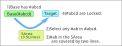
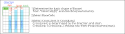
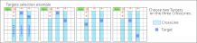
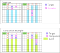
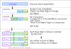
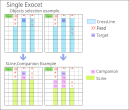
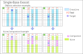

The website and GNPX development are progressing in parallel, so there may be inconsistencies between the two.
The most up-to-date information is in the GNPX source code.
The contents of this website may contain errors (high probability), so please view them critically.
(Standatd) Exocet
This section explains how Standard Exocet works.
Exocet is an algorithm that combines various elements and constraints, such as House, Target, Crossline, Coverline, and Companion.
If you are unfamiliar with the format and terminology of Exocet, please refer to  Junior Exocet.
Junior Exocet.
(0) ExocetのLocked
Exocet is an algorithm by Locked.
- 1) There are three or more Base candidate numbers in the Base.
- 2) The S area determined by the Base, Target, and Companion has restrictions on the placement of Base numbers.
- 3) For any combination of Base candidate digits, that Base digit is in the Target.

Below explain the logic behind Exocet.
(1) Exocet Framework
First, set the Base and direction.
- Frame :
- 1) Select three CrossLines (CL).
There is only one CL-0. There are three candidates for CL-1 and CL-2, and one CL is selected for each. - 2）Escape is determined by stem, direction, CL-1, and CL-2.
- 3) The stem is used to define the shape and is not related to the logic of the Exocet.

(2) Elements of Exocet
Shows the steps to assemble the elements of Exocet and clarifies the function and relationships of each element.
- Target :
- 1) Focus on CrossLine(CL)-1 and -2 and place Target on CL at a point other than Escape.
The Target must contain Base digits.

- Companion :
- 1) Companion is defined in a location other than Target or Escape in CL as shown in the following figure.
- 2) Companions are defined for each Target, and then combined to form the Companion for the current phase.
- SLine :
- 1) SLine is the remaining area after excluding Escape, Target, Companion from CL.
- 2) Base digits are available on SLine and Target, but not on Escape and Companion.
If the SLine doesn't have Base digits, the Target has it.

(3) SLine - Target link ... Companion Role
In Exocet, the Companion serves an important function.
Companion can be set to "optional", but if set too high it will filter out legitimate links.
- CrossLine has one instance of candidate digit #a.
- Divide CrossLine into SLine, Companion, Target, and Escape.
- Escape does not have #a. There are instances of SLine, Companion, and Target #a.
- The projection point of Target onto another CrossLine is also Companion.
- Adding Condition: Companion does not have #a makes SLine and Target a link (#a is in either one).
- If (by some logic) it is determined that SArea does not have #a, #a is in Target.

(4) Candidate digits conditions
Under the definition of JExocet, the following conditions (R1 to R4) are tested.
When all Base Digits satisfy conditions R1 to R4, it becomes Exocet Locked.
JE2 Candidate digits conditions
| R1 | The Base cells(B1, B2) are both undetermined cells and have a total of 3 to 4 base digits. |
| R2 | The target cells(T1,T2) are both undetermined cells and have a total of three or more base digits. |
| R3 | The Companion cell does not contain a Base digits. |
| R4 | For all Base digits, the Base digits in the S region {S0,S1,S2} are covered by two Lines(Houses). |

Explain these conditions in more detail here.
| R1’ | If there are two base candidate numbers in the base cell, it is a LockedSet.
If there are 5 or more, it is predicted that "there are more constraints and it is unlikely to exist."
Therefore, R1 is "Base digits between 3 and 4." It will likely expand(3 to 6 in GNPX ver. 6). Two Base cells may not have any digits in common. |
| R2’ | Target can also include candidate digits other than the Base digits. |
| R3’ | Companion is fixed or unfixed cells. |
| R4’ | The Base digtis in the S region {S0, S1, S2} can be either candidate digits or fixed digits. |
(5) Exocet logic... Locked proof
Base digits that satisfy R1 to R4 are Locked.
When select any two digits from the Base digits, the following proposition holds true for those two digits:
Proposition: If the digits in Base are positive, the digits in Target-1 and Target-2 will also be positive.
- Proof of JE2 Locked (CL:Cross-Line)
- L1. In the Base, the Base digits#ab is positive. And in Escape, #ab is negative.
- L2. CL-0, CL-1, and CL-2 each have three instances of #ab (according to Sudoku rules), for a total of six instances.
- L3. Since R4, S-Area(S0,S1,S2) have two #a CoverLines and two #b CoverLines.
- L4. Since "6-4=2", there are instances of #a and #b in the Band area of CL-1 and CL-2.
- L5. The #a and #b instances are not in Escape or Companion, but in Target1 and Target2, respectively.(it is not clear which).

The contrapositive of the proposition is as follows:
Contrapositive: If the candidate digits of Target do not completely cover Base, then Exocet does not hold.
(6) Understanding Exocet Locked (Reposted)
Consider the Exocet Locked
For Exocet Locked, no matter which two candidate digits are selected from the candidate digits in Base,
they will be positive in Target.
The target puzzle has a solution and is a unique solution.
If look back from the solution, any two base candidate digits(#a,#b) are fixed digits(#A,#B).
Since there are three or more candidate digits for Base, if focus on the remaining "#x",
candidate digit #X is negative in Target and positive in Escape.
However, while solving the puzzle, it is not known which of the Base candidate digits is the solution.
Exocet Locked is an inference that is not certain but can still be derived.
A similar inference can be imagined, for example, as LockedSet.

Exocet Extensions
(1) Exocet Single
JExocet (JE1) 
A Single Exocet is a case where one of the Objects "cannot have a Base digits" = "confirmed cells".
The Base Cell, Base digits, and CrossLine settings are the same as for a standard Exocet.
The following diagram is an example. One of the Objects is a confirmed cell, and the SLine and Companion shapes are shown here.
The Object and Companion settings are the same as for a standard Exocet.

- Conditions for a Single Exocet
- 1) Among the Base digits, one candidate digits has three CoverLines in the SArea (called the "wildcard").
- 2) For Base digits (#a) other than the wildcard, all #a in the SArea can be covered by two CoverLines.
- 3) In a normal Object, all Base digits, including the wildcard, are candidates (other digits may also be included).
- Single Exocet Results
- 1) In Base, the wildcard is positive.
- 2) In the regular Object, the wildcard is positive.
- 3) In the cell that is connected to both a Base and a regular Object, the wildcard is negative.
(2) Exocet Single-Base
Exocet Single-Base is a case where the Base of Exocet Single is 1 cell.
Exocet Single-Base is applicable to more situations than any other Exocet.
